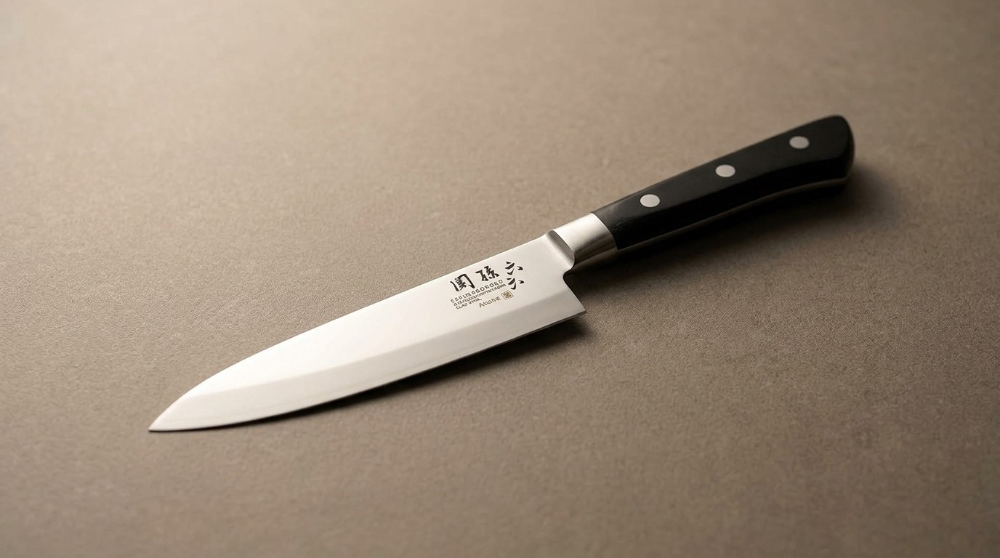

This isn't a knife from a different, cheaper line. It's the same steel, the same handle, the same maker as the largest knife in its own lineup -- just built at 120mm instead of 210mm. If bigger were simply better, this size wouldn't exist at all.
Kai's Seki Magoroku "Akane" line ships as a graduated set of five blades, all sharing the same clad steel and handle design:
Japanese kitchen knives have traditionally been divided by task rather than sold as one "does everything" blade. The 210mm gyuto exists for rocking through onions and breaking down proteins. The 120mm petty exists for the opposite kind of work entirely -- and that's exactly why a serious kitchen keeps both.
A chef's knife earns its length by staying in constant contact with the board on long, straight cuts. But that same length works against you the moment the job gets small and close: peeling a whole apple in one ribbon, hulling a strawberry, deveining a shrimp, trimming silverskin off a cutlet, cutting a citrus segment free from its membrane. Try any of those with a 210mm blade and the tip is too far from your guiding hand to control precisely -- you're steering a blade you can barely see the end of.
A petty knife puts the cutting edge exactly where your fingers already are. That's the whole design brief: not a smaller chef's knife, but a different tool for work that rewards control over reach.
The engraved mark reads Sekimagoroku (関孫六). It traces back to the 2nd-generation swordsmith Kanemoto, active in Seki, Mino Province (today's Seki City, Gifu Prefecture) in the early 1500s during the late Muromachi period. Known as "Seki no Magoroku," he developed the sanbon sugi (three-cedar) blade-pattern forging technique, and swords bearing his work armed Sengoku-era warlords including Takeda Shingen and Toyotomi Hideyoshi. The Kanemoto swordsmithing line continued for more than 20 generations from the Muromachi period into the present day -- Kai Corporation, still based in Seki, carries that name onto its modern kitchen cutlery.
To be upfront: this is not a hand-forged, single-smith blade. Kai is one of Japan's largest cutlery manufacturers, and the Seki Magoroku Akane line is a mainstream, dishwasher-safe, stainless/high-carbon clad-steel knife made on a production line -- not an individually hammered heirloom. What it does carry forward honestly is the maker's location (Seki, still a working cutlery town) and the Magoroku name itself, on a knife built for actual daily kitchen use rather than display.
Kai Seki Magoroku Akane Petty Knife, 4.7 in (120mm) blade, stainless/high-carbon clad steel, black resin handle, ambidextrous, dishwasher safe. Made in Seki, Japan.
See current price on Amazon →As an Amazon Associate, I earn from qualifying purchases.
This page contains an affiliate link — if you buy through it, it costs you nothing extra and helps support this site. Blade-length figures are the manufacturer's stated specifications for the Seki Magoroku Akane line.